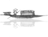

日照香炉生紫烟
遥看瀑布挂前川
飞流直下三千尺
疑是银河落九天

“少壮不努力，老大徒_____”出自《汉乐府·长歌行》。
悲伤
伤悲
忧伤
晏殊的《浣溪沙》中的“无可奈何花落去”的下句是_____。
似曾相识鸟归来
似曾相识雁归来
似曾相识燕归来
《七步诗》的作者是_____。
曹植
曹操
曹佩
杜甫的《春夜喜雨》中的“晓看红湿处”的下句是_____。
花重绵阳城
花重锦州城
花重锦官城
“春色满园关不住，一枝红杏出墙来。”出自叶绍翁的_____。
《游园不植》
《春望》
《春夜喜雨》
“海内存知己，天涯若比邻。”是_____的诗句。
李白
王勃
王维
“人生自古谁无死，留取丹心照_____。”是文天祥的诗句。
汗青
汉青
汉清
“但使龙城飞将在，不教胡马度_____。”是王昌龄的诗句。
边关
阴山
燕山
“停车坐爱枫林晚，霜叶红于二月花。”中的“坐”的意思是_____。
坐下
座位
因为
杜牧的《江南春》中的“南朝四百八十寺”的下句是_____。
多少楼台风雨中
多少楼台烟雨中
多少楼台烟波中
精彩即将呈现